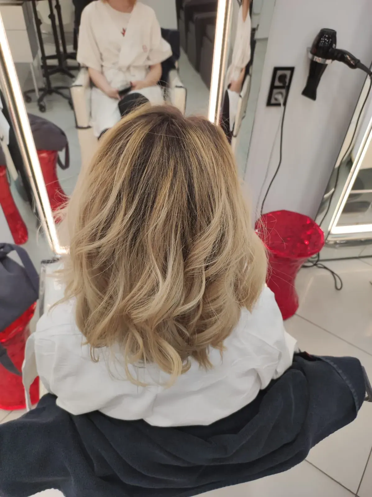

Все три техники дают эффект волос, выгоревших на солнце: темнее у корней, светлее к концам. Разница — в том, как колорист выбирает пряди и наносит осветлитель. От этого зависят мягкость перехода, яркость блонда и то, как скоро понадобится следующий визит.
Что такое шатуш
Шатуш — техника мягкого осветления, которую связывают с именем Альдо Копполы: американский отраслевой журнал WWD называет её среди нововведений маэстро. Колорист осветляет тонкие пряди хаотично, без фольги, а переход от корня растягивает так, чтобы не было чёткой границы.
Получается эффект, будто вы провели лето у моря: волосы темнее у корней и постепенно светлеют к концам. Главное достоинство — отрастающие корни не выдают себя, поэтому к колористу можно приходить раз в три-четыре месяца.
Чем шатуш отличается от балаяжа
Балаяж (от французского «выметать») делают мазками по поверхности прядей, как кистью по холсту. Осветлитель ложится там, где на волосы естественно падает свет. Переход у балаяжа обычно контрастнее, а светлые участки ярче, чем у шатуша.
Если хочется заметного блонда на длине, балаяж подойдёт лучше. Если важнее естественность и редкие визиты — шатуш.
А airtouch?
Airtouch — одна из самых технологичных техник. Колорист отделяет прядь, выдувает феном короткие волоски и осветляет только оставшиеся длинные. Так получается очень ровный, плавный переход и много светлых прядей.
Процедура занимает больше времени, чем шатуш или балаяж, и стоит дороже. Подходит тем, кто хочет светлый результат и готов к регулярным тонированиям.
| Шатуш | Балаяж | Airtouch | |
|---|---|---|---|
| Переход от корня | самый мягкий | заметнее | ровный, плавный |
| Сколько светлого | умеренно | больше на длине | много светлых прядей |
| Как часто обновлять | раз в 3–4 месяца | раз в 2–3 месяца | по рекомендации колориста |
| Кому подходит | тем, кто ценит естественность | тем, кто хочет яркий блонд на длине | тем, кто хочет светлый результат |
Кому подходит шатуш
Лучше всего техника раскрывается на волосах от средней длины: на длинных есть где «растянуть» цвет. На очень коротких стрижках переходу просто негде развернуться.
Шатуш хорошо выглядит на русых, каштановых и тёмно-русых волосах. На брюнетках колорист обычно работает в несколько этапов, чтобы осветление не дало рыжины. На седых волосах технику сочетают с тонированием — об этом в материале о седине.
Как подготовиться и что спросить у колориста
- Принесите две-три фотографии цвета, который нравится, и одну, который точно не нравится.
- Расскажите, когда в последний раз красили волосы и чем, особенно если это хна или тёмная краска.
- Спросите, сколько займёт визит и понадобится ли тонирование.
- Уточните, как часто нужно будет обновлять цвет именно вам.

Как ухаживать за шатушем дома
Осветлённые пряди любят увлажнение и бережное отношение. Пользуйтесь шампунем без агрессивных ПАВ, маской раз в неделю и термозащитой перед феном. Если появляется желтизна, поможет оттеночный уход — но не чаще раза в неделю, иначе блонд потускнеет. Подробно — в материале о том, как сохранить блонд.
Вопросы и ответы
Сколько держится шатуш?
Сам цвет не «смывается», а отрастает. Благодаря мягкому переходу обновлять шатуш обычно нужно раз в 3–4 месяца, тонирование — по рекомендации колориста.
Можно ли сделать шатуш на тёмных волосах?
Да. На тёмных волосах колорист часто работает в несколько этапов и обязательно тонирует, чтобы убрать рыжину.
Шатуш портит волосы?
Любое осветление нагружает волосы, но при шатуше осветляют только часть прядей. Колорист подбирает щадящий осветлитель и уход, чтобы сохранить качество волос.
Что лучше для редких визитов — шатуш или балаяж?
Шатуш: переход у него мягче, поэтому отросшие корни заметны меньше.
Источники
- Women's Wear Daily (WWD): материалы об Aldo Coppola и его инновациях
- Методические материалы Академии Aldo Coppola